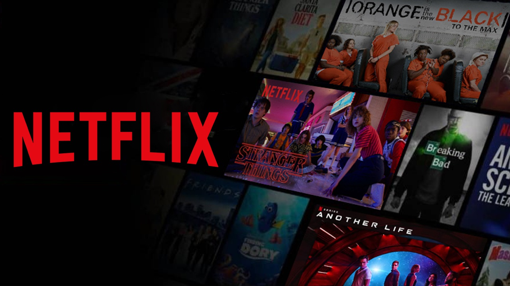

Adaptação de vídeo game já tem data de lançamento!
A Sony divulgou que o filme Gran Turismo — De Jogador a Corredor estreia no dia 24 de agosto nos cinemas do Brasil.O longa tem direção de Neill Blomkamp, (Distrito 9; Elysium) com roteiro por Jason Hall e Zach Baylin, sendo parcialmente inspirado na vida de Jann Mardenborough, um jogador de Gran Turismo que se tornou um piloto profissional de corridas automobilísticas. No elenco, Archie Madekwe (Simon em Midsommar) vive Jann, e David Harbour (Jim Hopper em Stranger Things) é seu treinador, Jack Salter. Gran Turismo é uma franquia de jogos de simulação de corrida desenvolvida pelo Polyphony Digital — um estúdio japonês da Sony — para consoles da família PlayStation. O primeiro jogo saiu em 1997, para o PS1, e o mais recente é o Gran Turismo 7 (para PS4 e PS5), lançado em março de 2022.
Ler mais

Netflix anuncia novo plano com anúncios e muda resolução da assinatura básica no Brasil
A Netflix anunciou nesta uma nova opção de assinatura da plataforma. Trata-se de um plano com a exibição de anúncios antes e durante filmes e séries do catálogo do streaming.
Ler mais
The Last of Us | Showrunner diz que spin-offs são possibilidade
Craig Mazin, o criador The Last of Us, disse que spin-offs da série da HBO podem estar a caminho. Em entrevista ao The Wrap, ele sugeriu que essa possibilidade também deve animar Neil Druckmann, o co-showrunner."Não falamos especificamente sobre isso, porque estamos tão focados em apenas contar essa narrativa principal. Não sou contra a ideia de outras séries que possam derivar desses personagens ou desse mundo", disse Mazin à publicação. "Não sei o quanto mais de The Last of Us eu pessoalmente seria capaz de fazer. Quero dizer, essas séries são tão grandes que estou meio que usando uma das preciosas poucas décadas que me restam para contar essa história. Mas, em princípio, não tenho problema algum com isso. E tenho certeza de que o Neil também estaria interessado". "Se houvesse algo que fizesse sentido, então não vejo por que não", acrescentou Mazin. "Minha grande esperança é que, se houver algo assim, seja feito com tanto cuidado, respeito e amor quanto estamos colocando a esta série agora."
Ler mais